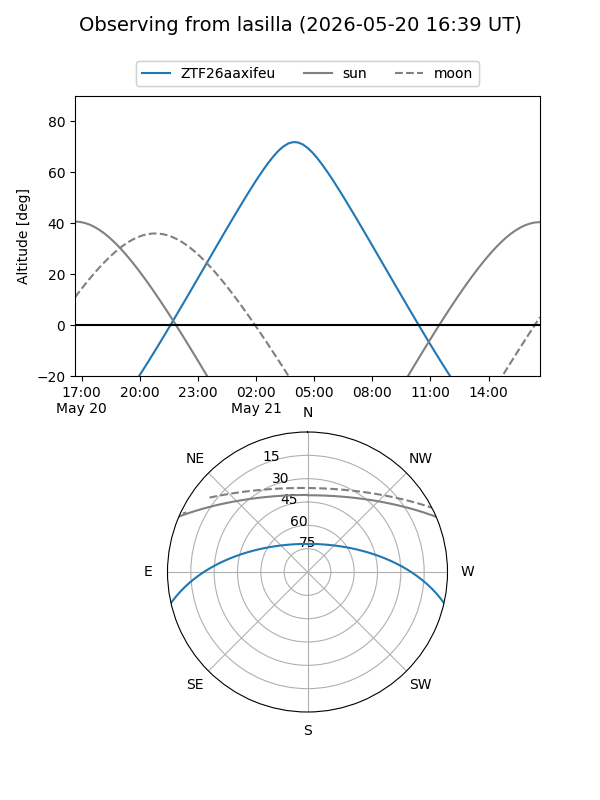
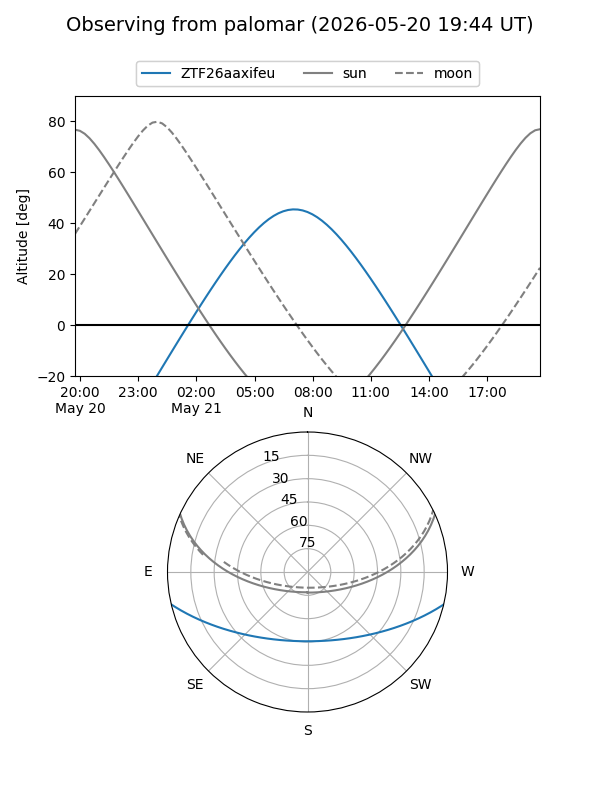

ZTF26aaxifeu
Target ZTF26aaxifeu at 2026-05-21 08:29
Aliases and brokers:
FINK: link
Lasair: link
ALeRCE: link
alt names
ZTF26aaxifeu (ztf,fink_ztf)
Coordinates:
equatorial (ra, dec) = 227.5650,-11.07572
equatorial (HMS+DMS) = 15:10:15.60,-11:04:32.58
galactic (l, b) = (348.9708,+39.08147)
Flags:
Photometry:
last ztfg=19.99
1 ztfg detections
Lightcurve
Visibility


Additional plots